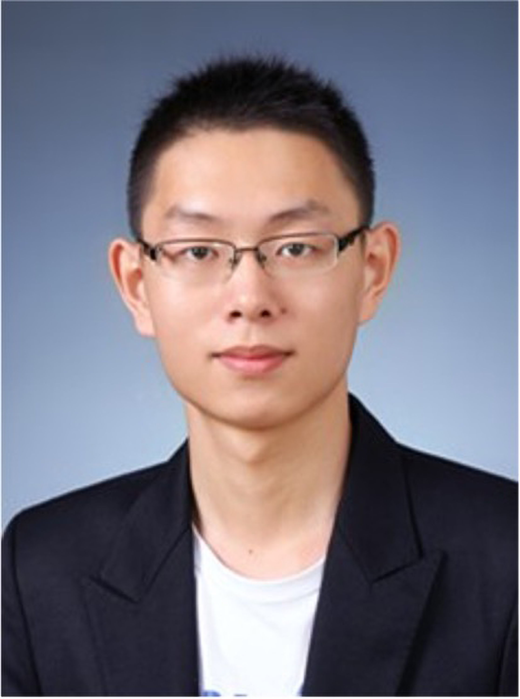

Yiming Zhou, Ph.D.
Principal Investigator
Yiming is currently a faculty member at the Interdisciplinary Research Center on Biology and Chemistry (IRCBC), Chinese Academy of Sciences, Shanghai.
He completed his Ph.D. in Systems Neuroscience at Fudan University, where he studied the neural circuit mechanisms of learning and memory under the guidance of Dr. Lan Ma. After completing his Ph.D., Yiming joined the Broad Institute as a postdoctoral fellow under the mentorship of Dr. Xiao Wang, where he developed spatial circuit-mapping technologies.
The Zhou Lab develops new spatial technologies to study learning, memory, and decision-making in healthy and disease states across molecular, synaptic, cellular, and circuit levels.